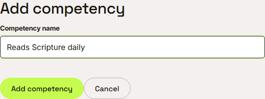
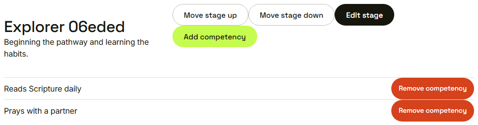
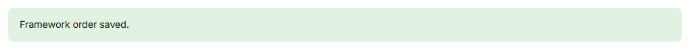
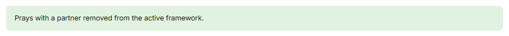

Waypoint · Video 047
Authoring the progression framework
Ordered stages and their competencies
Competencies belong to a stage

Add competency

Two competencies on the first stage
The order is saved

Framework order saved
Removed from the active framework

One press removes a competency
What the framework drives
- Each youth's current stage
- The competency assessments mentors complete
- Program reports
Things to remember
- Stages are ordered, and the order is saved
- Competencies belong to a stage
- Add, edit, move and remove
- Only a program administrator can edit